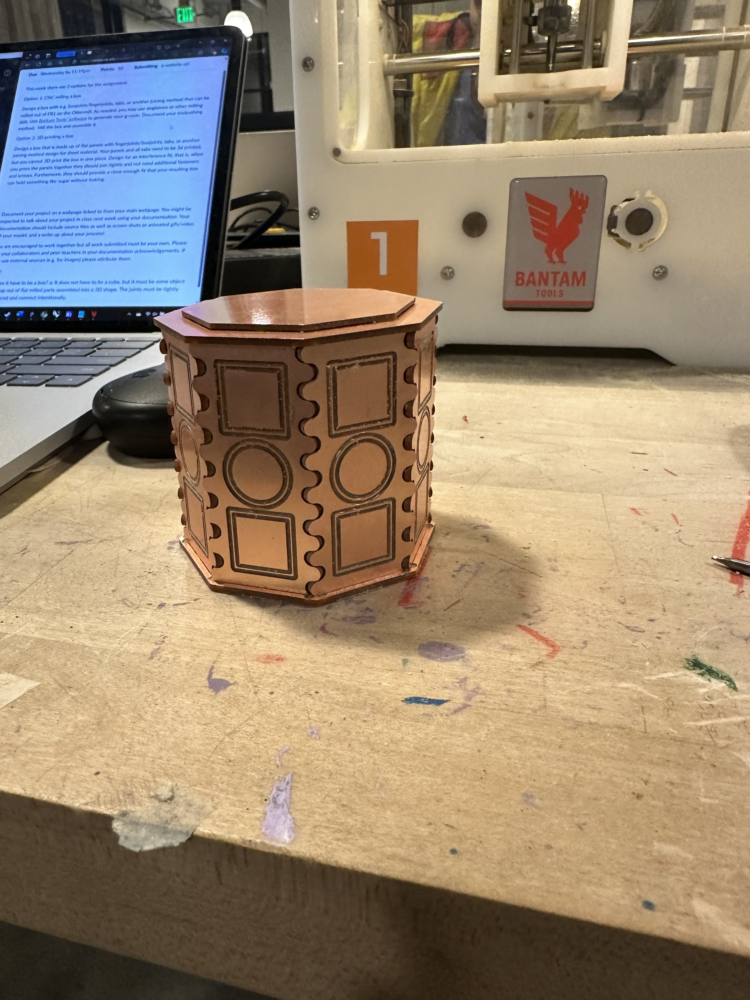
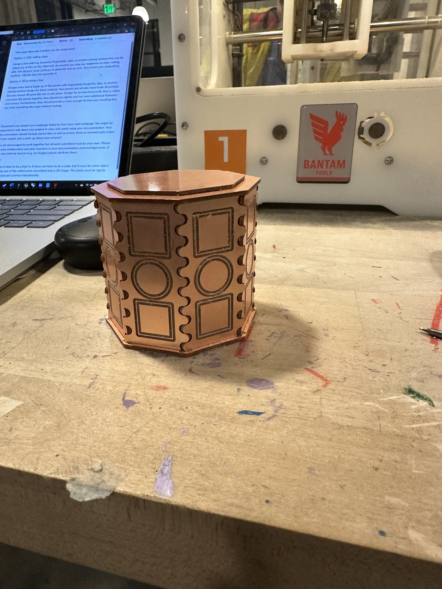

A4: Subtractive Manufacturing!
Option 1: CNC milling a box
Design a box with e.g. boxjoints/fingerjoints, tabs, or another joining method that can be milled out of FR1 on the Othermill. As needed, you may use dogbones or other milling aids. Use Bantam Tools' software (Links to an external site.) to generate your g-code. Document your toolpathing method. Mill the box and assemble it.
Design a box with e.g. boxjoints/fingerjoints, tabs, or another joining method that can be milled out of FR1 on the Othermill. As needed, you may use dogbones or other milling aids. Use Bantam Tools' software (Links to an external site.) to generate your g-code. Document your toolpathing method. Mill the box and assemble it.
Sketches:
During class I started some sketches that used the idea of interlacing waves as a connecting edge. If these two surfaces were in line with each other it would be a seal, at 90 degrees it would be full of gaps as only the outer edges would be interlocking and leave gaps similar to the dog bones. At 45 degrees I thought i could i could get at least a corner edge of a part to touch the other part at all times. I later realized a mistake that there would be some conflict with the line of the curve at an angle with the thickness of the material similar to the 90 degree version. I chose to keep moving forward with this design with a little larger gap between materials to see how precise i could get it. For the top and bottom piece I was going to do an octagon panel with an engraving for the pannels to fit into. The inside risen area could have sharp edges to match the panels and the outer corners would have exagerated rounding to account for the excess material overlapping of the panels. I ended up doing a different lid desgin than shown in these sketches.
Rhino
Pictured above is the 3D model using my inital panels and the final 2D version of the parts with cutting lines in red, engaving in blue, and personal reference lines in black from trying to figure out the engaving settings. The difference beween the top and bottom panels is just the centeral red line being ommited for the top panel of the middle shape. The cutting outline is 0.5 away from the shape for the two shapes on the right but 0.375 away for the side panel on the left. In testing 0.35 was too loose for the side panel and should idealy be 0.3625, but i did not want to waste further material testing this. The lid panel on the right is slightly larger than the hole in the top panel with engraving around the edges so some part of it can still fit in the top hole. The top and bottom panels now also include notches to help keep the side panels in place, these holes are slightly wider than the side panel tab to account for the rounding of the tab in the corners.
Source Files:
Rhino fileside panel cutting file
side panel engraving file
top panel cutting file
top panel engraving file
KiCad
The engraving for the side panel was set as 0.5 line thickness, and the top and bottom panels engraving line thickness was 0.01 whcih allowed the inbetween material to of the thickness to be easily removed. Due to the size of some parts and the amount of side panels these were done on seperate files to allow more flexability when milling.
Source Files:
top panel file
side panel file
side panel cutting file
side panel engraving file
top panel cutting file
top panel engraving file
Bantam
The engravings for the side panels were done with 0.15 pass depth and the engrabing for the top and bottom panel were done with 0.7 pass depth to help secure the panels. I ended up cutting on a thicker panel than i designed for, 1.72mm thick instead of 1.35mm. Drilled using a 1mm diameter 2 flute flat end mill. On half the side panels I opted to not do engraving to save time.
engraving learing process and version 1:

 
